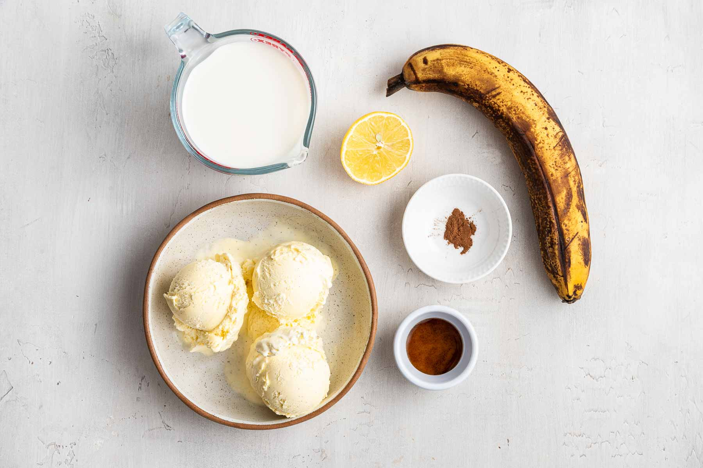
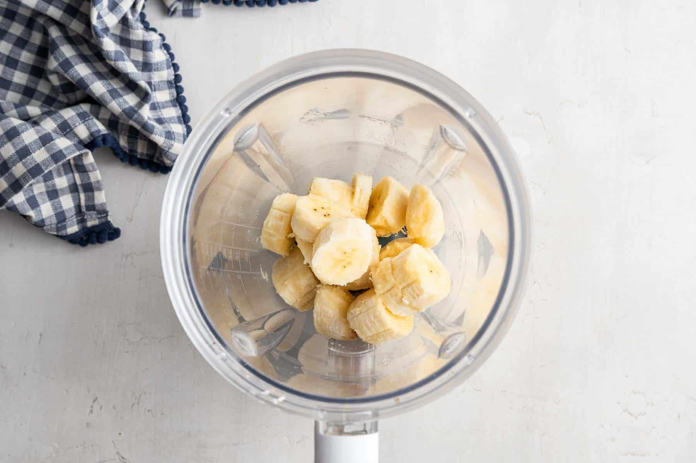

Joshua's Banana Shake

Contents:
- Ingredients
- Instructions
- Sources
Ingredients
| Ingredients |
Quantity |
| Banana |
1 |
| Milk |
1 cup |
| Vanilla Extract |
1/4 tsp |
| Cinnamon |
1/8 tsp |
| Lemon Juice |
1 tsp |
| Vanilla Ice Cream |
3 fat scoops |
For Serving
- Whipped Cream
- Dried Banana

Instructions
- To the bottom of your blender (a highspeed blender is my first choice, but any blender will work here), add the sliced banana.
- Next, pour in the milk, vanilla, cinnamon and lemon juice.
- Add the three big scoops of ice cream to the blender last.
- Blend everything together until very smooth and creamy. If it’s too cold and not blending, add small splashes of milk until the banana milkshake liquifies and is pourable.
Sources
Source 1: Some recipes websites
Source 2: Some recipes websites
